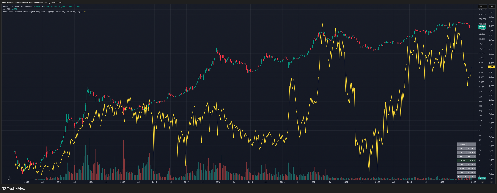

Blended Net Liquidity Correlation
Many traders study macro liquidity to understand broader market conditions and potential influences on price. This tool blends public liquidity components and evaluates correlation vs price across multiple windows.
Click the chart to open the indicator on TradingView.
How Traders Recreate This Without the Indicator
You can approximate similar liquidity views manually using public series and TradingView symbol math (e.g., WALCL − RRP − TGA), then smooth and compare against price.
What the Script Does
- Combines selectable components such as WALCL, RRP, TGA, BTFP, lending, and M2.
- Supports toggles, smoothing, and weighting controls.
- Computes correlations across multiple time windows and highlights the strongest.
Important Notes
- FRED data updates weekly and may revise history.
- Correlation does not imply causation.
- Liquidity models are approximations, not forecasts.
Not signals. Not alerts. Not shortcuts.
The goal is to document how indicators work — not to tell anyone when to trade.
If an indicator can’t be explained down to its underlying mechanics, it probably isn’t understood well enough to trade.
Disclaimer
Educational use only. This is not financial advice.